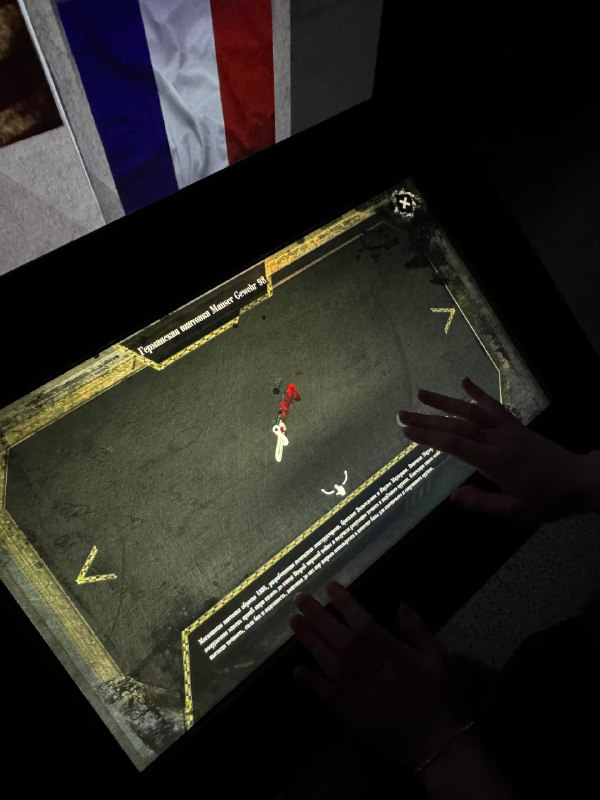
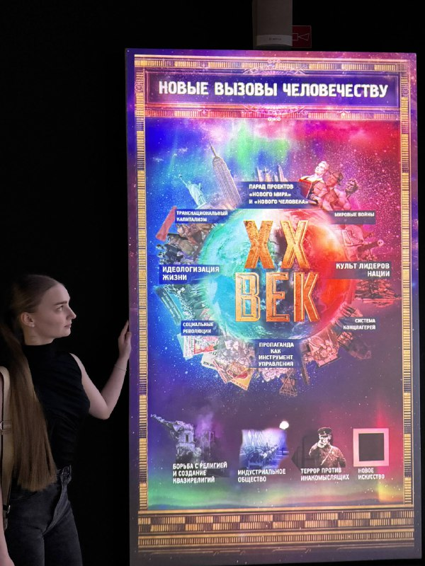
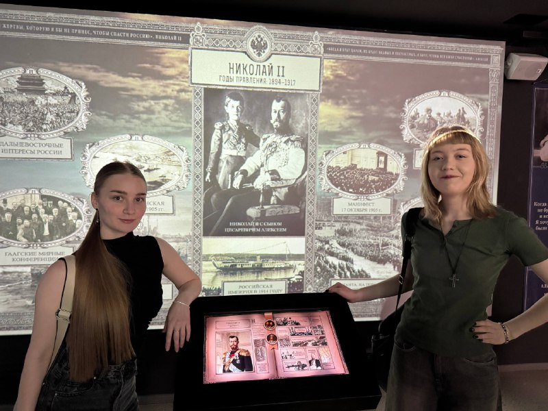
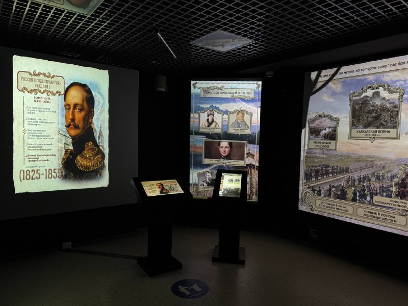
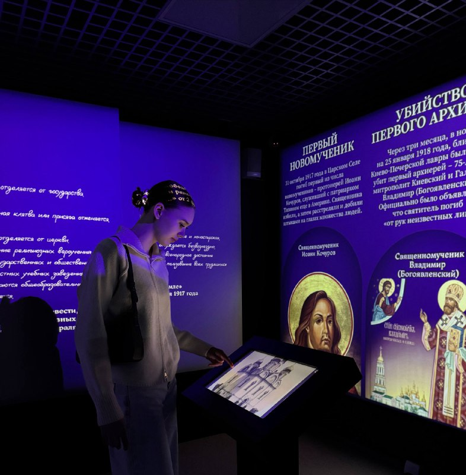
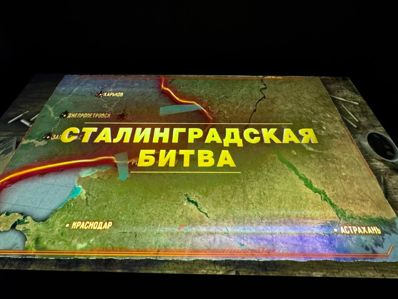

Знакомство с историей нашей страны через фотографии и описания ключевых событий и мест
Центр Исторический парк «Россия – Моя история» – это «живой учебник» по истории нашей страны с древнейших времен до наших дней. Уникальность парка в том, что история здесь представлена с помощью различных современных технологий: - интерактивные тач-панели и проекции - 3D-модели зданий и городов - мультимедийные реконструкции исторических сражений.

Дисплеи, на которых можно прочитать интересные факты из нашей истории.

Красиво светится)

Возможность найти интересную информацию, связанную с ключевыми событиями, или проследить личную историю через призму глобальных процессов.

В экспозициях Исторического парка школьники смогут изучить гербы городов и поселков, погрузиться в тему освоения и создания первых поселений на территории нашего края. Познакомят ребят и с культурными особенностями нашей области.

Особое внимание было уделено событиям прорыва и полного снятия блокады, знаменующим конец ужасающих испытаний.

В рамках проекта представлены электронные образы документов и фотографий, раскрывающие в популярной форме, но с опорой на проверенные, очищенные от легенд и измышлений факты о блокаде Ленинграда и героизме его защитников.